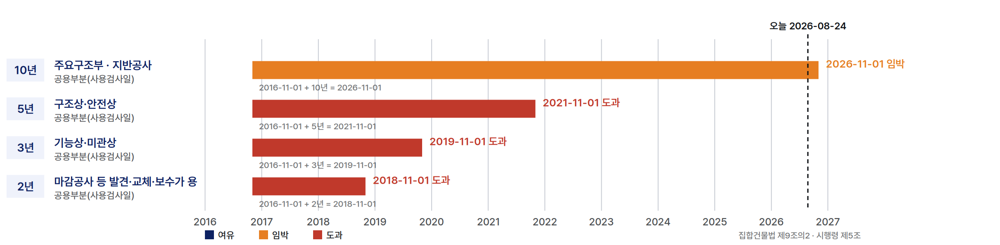

법무법인 제이엘 하자소송 수행 제안서
05 / 31
담보책임기간 잔여 [가변 · 자동계산]
예시 데이터
{{단지명}}의 담보책임기간, 공종별로 여유와 도과가 갈립니다

주요구조부·지반공사 (10년)
2016-11-01 + 10년 = 2026-11-01
임박
구조상·안전상 · 철근콘크리트·조적·지붕·방수 (5년)
2016-11-01 + 5년 = 2021-11-01
도과
기능상·미관상 · 건축설비·목공사·창호·조경 (3년)
2016-11-01 + 3년 = 2019-11-01
도과
마감공사 등 발견·교체·보수 용이 하자 (2년)
2016-11-01 + 2년 = 2018-11-01
도과
기산일은 사용검사일(공용부분) 기준입니다. 이미 도과한 공종은 숨기지 않고 그대로 표시하며, 남은 구간에 청구를 집중하는 근거로 씁니다.
python3 tools/timeline.py template/data/<단지>.json
으로 재계산됩니다.